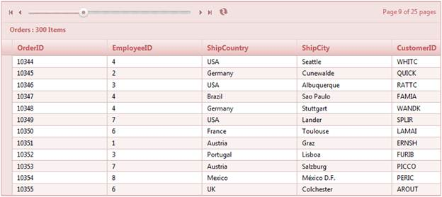

1. Create a model in the application (Refer to Getting Started>Adding a Model to the Application).
2. Create a strongly typed view (Refer to How to>Strongly Typed View).
3. In the view you can use its Model property in Datasource() to bind the data source.
|
View [ASPX] <%=Html.Grid<Order>("OrderGrid") .Datasource(Model) .Caption("Orders") .AutoFormat(Skins.Almond) .Column(col => { col.Add(c => c.OrderID) col.Add(c => c.EmployeeID) col.Add(c => c.ShipCountry) col.Add(c => c.ShipCity; col.Add(c => c.CustomerID); })
.PageSettings(page => { page.AllowPaging(true); page.PagerStyle(PagerStyle.Slider); page.PagerPosition(Position.TopLeft); page.ShowPagerInformation(true); })
%> |
|
View [cshtml] @{ Html.Syncfusion().Grid<MVCSampleBrowser.Models.Order>("OrderGrid") .Datasource(Model) .Caption("Orders") .AutoFormat(Skins.Almond) .Column(col => { col.Add(c => c.OrderID); col.Add(c => c.EmployeeID); col.Add(c => c.ShipCountry); col.Add(c => c.ShipCity ); col.Add(c => c.CustomerID); })
.PageSettings(page => { page.AllowPaging(true); page.PagerStyle(PagerStyle.Slider); page.PagerPosition(Position.TopLeft); page.ShowPagerInformation(true); }).Render();
}
|
4. Set its data source and render the view.
|
Controller /// <summary> /// Used to bind the grid. /// </summary> /// <returns>View page; it displays the grid.</returns> public ActionResult Index() { var data = new NorthwindDataContext().Orders.ToList(); return View(data); } |
5. Run the application. The grid will appear as shown in the following screenshot.

Figure 109: Grid with Slider Pager